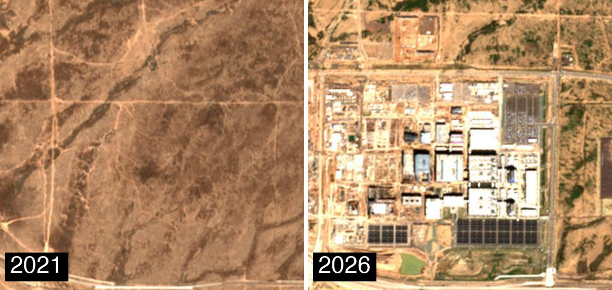
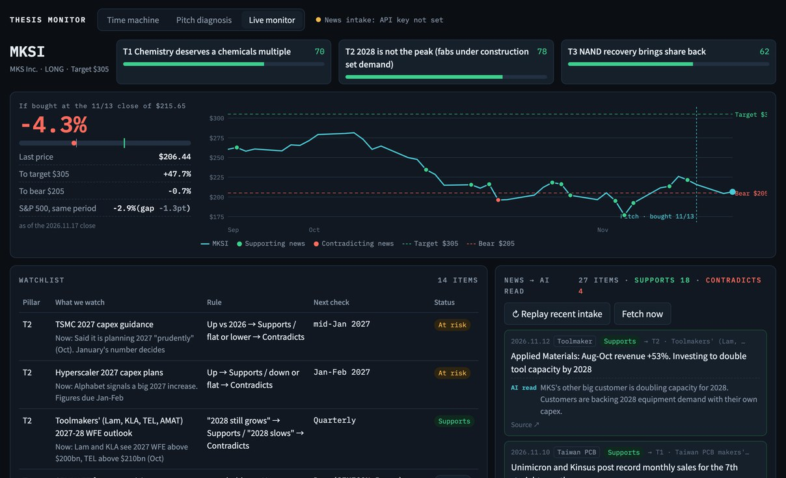
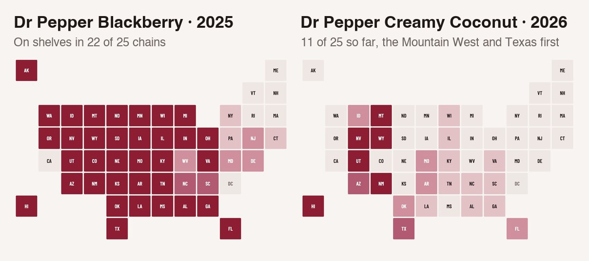
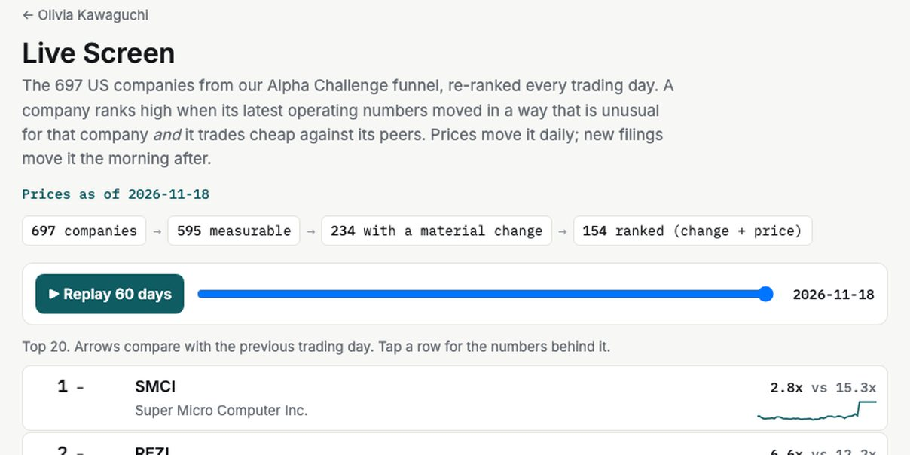
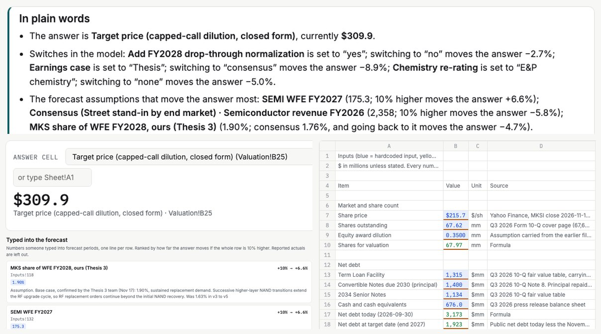

Signal Watch: is 2028 really the peak?
Monitoring · MKSI · 2026-11-16
Tap to open the app
AI tracks 17 new chip factories from free satellite photos and lines them up with customs records of chip-making machines shipped in, months before MKS reports.
17 fab sites · 251 satellite images
Thesis Monitor: AI watches our MKSI thesis, claim by claim
Live · Thesis audit · since 2026-11-13
Tap to open the app
AI splits our MKSI thesis into claims, gives each a deadline and a test, and scores every news item and earnings report against them, so we see a claim break before the price does. It learned what to watch by replaying how published fund theses played out.
3 pillars · 14 watch items · 27 news items read so far
Shelf Variance: watching a launch cross the country
Monitoring · KDP · 2026-11-17
Tap to open the app
AI checks the online stores of 25 grocery chains covering all 50 states in one morning, so a Keurig Dr Pepper launch can be tracked state by state, week by week.
25 chains · 50 states · break points fixed in advance
Live Screen: 697 companies, re-ranked every day
Live · Screening · updated every trading day
Tap to open the app
The front of our 7,004-to-17 funnel, running on its own. It flags operating moves that are unusual for each company, prices them against peers, and re-ranks after every close. Press replay to watch 60 days of it.
Original run: 777 quotes checked · 81.7% verbatim · 15 untraceable, disclosed
Model Reader: find the assumptions inside anyone's model
Interactive · Model · 2026-11-18
Tap to open the app
Open any Excel model. It finds every typed number, traces what each one drives, and ranks which move the answer most. Drag one and the answer recomputes. Runs on a public-data version of our MKSI model; the sell-side originals in person.
Rebuilds a 13,805-formula broker model to the cent